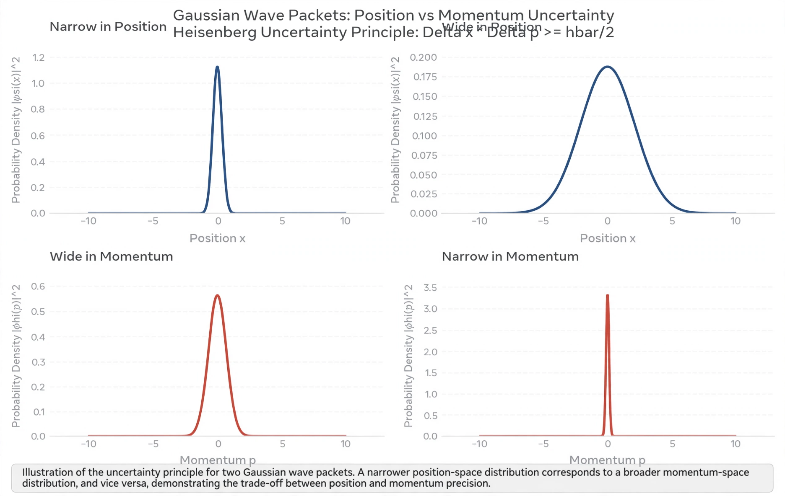

Uncertainty principle
| Formulated | 1927, Werner Heisenberg |
|---|---|
| Statement | Δx·Δp ≥ ħ/2 |
| Related | Copenhagen interpretation, Wave–particle duality |

[Image: Graph of a Gaussian wave packet showing the trade-off between position and momentum spread]In quantum mechanics, the uncertainty principle (also known as Heisenberg's uncertainty principle) is a set of mathematical inequalities asserting a fundamental limit to the product of the precision of certain pairs of physical properties of a particle, such as position x and momentum p, which can be known simultaneously: Δx·Δp ≥ ħ/2, where ħ is the reduced Planck constant.
Introduced by Werner Heisenberg in 1927 and generalised by Kennard and Robertson, the principle is often taken as a defining feature of quantum mechanics: unlike the observer effect, it is not a statement about the clumsiness of measurement but a property of wave-like systems themselves — a consequence of the Fourier relationship between conjugate variables. Albert Einstein resisted its interpretation as fundamental indeterminacy ('God does not play dice'), prompting debates with Niels Bohr that led to the EPR paradox and, eventually, Bell's theorem.
History
Heisenberg introduced the principle in his March 1927 paper, illustrating it with the gamma-ray microscope thought experiment: to locate an electron precisely requires short-wavelength light, whose photons disturb the electron's momentum. Bohr corrected Heisenberg's analysis while endorsing the conclusion, folding it into his doctrine of complementarity. Earle Kennard gave the first rigorous derivation later in 1927, and Howard Robertson generalised the inequality in 1929 to any pair of non-commuting observables.
Formulation and interpretation
For any two observables represented by operators A and B, the Robertson relation bounds the product of their standard deviations by half the expectation value of their commutator. The position–momentum case follows from the canonical commutation relation [x, p] = iħ. Whether the uncertainty reflects a limit on knowledge (epistemic) or on reality itself (ontic) depends on the interpretation of quantum mechanics adopted; mathematically, it is equivalent to the bandwidth theorem of Fourier analysis applied to the Wave function.
Consequences
The uncertainty principle explains why atoms are stable (an electron confined too closely to a nucleus would have prohibitively large kinetic energy), sets the scale of zero-point energy and vacuum fluctuations, and contributes to the finite lifetimes and linewidths of excited states through the energy–time relation. It underlies the standard quantum limit in precision measurement, which modern detectors such as LIGO circumvent using squeezed light.